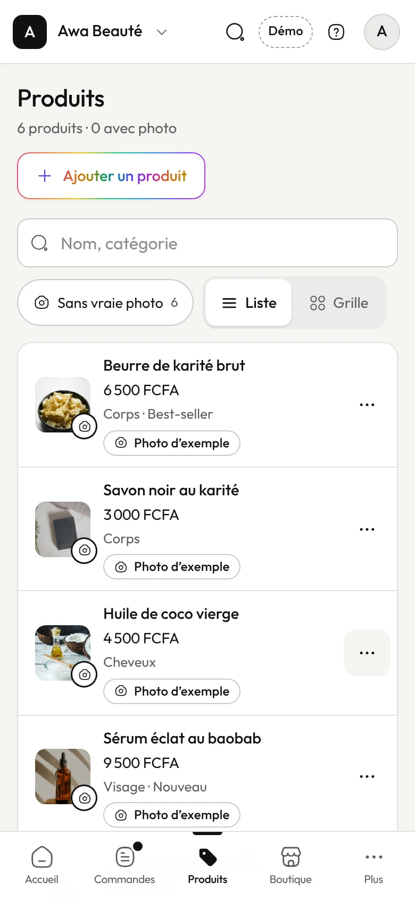

Kee · Kreeative
JEERE · Journal de bord #2
Un écran, du wireframe à la haute fidélité.
Ce qui reste : une seule action principale, et une liste qu’elle parcourt sur son téléphone.
Prototype+ ajouter un produit
Wireframe

Haute fidélitédans le prototype aujourd’hui
JEERE · Journal de bord #2kreeative.xyz